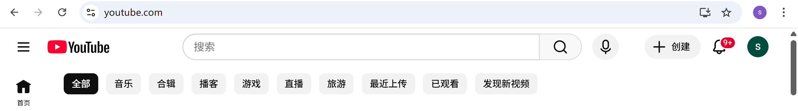
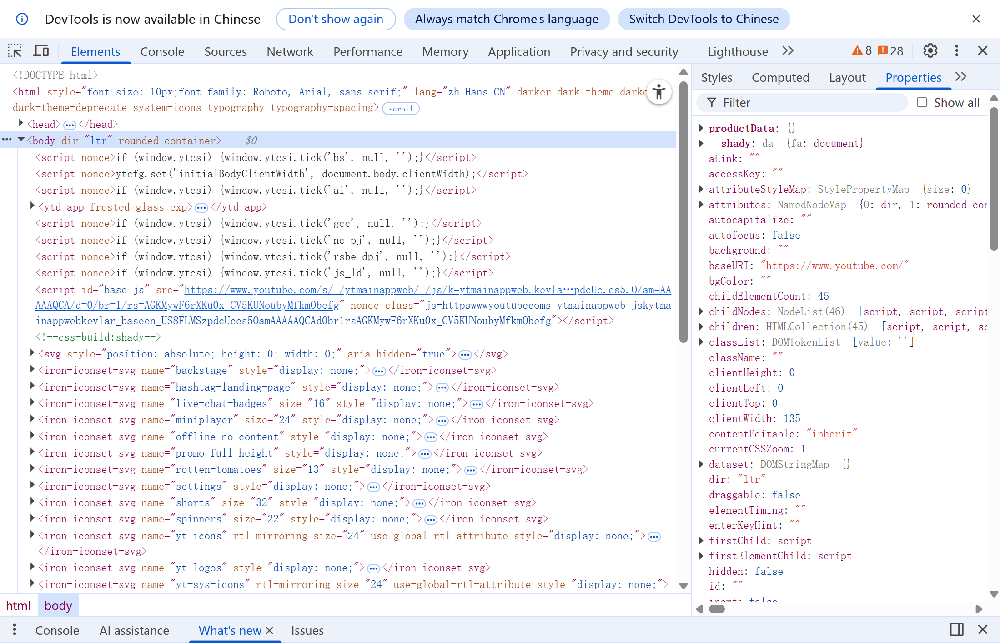
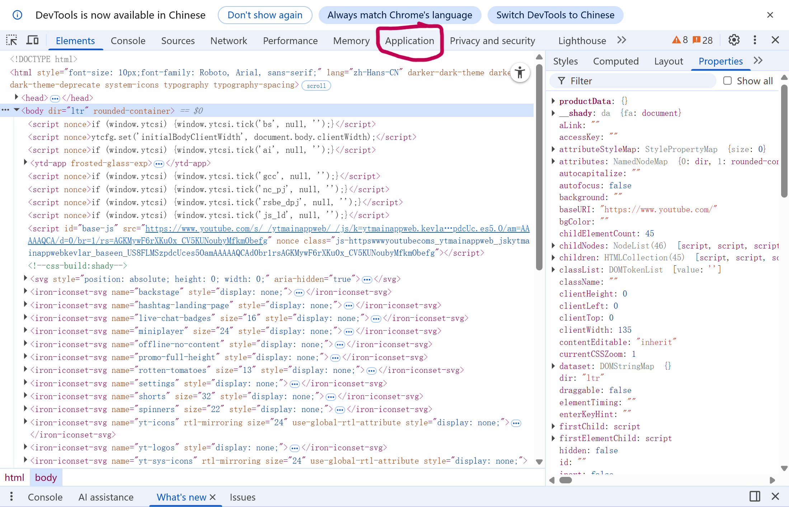
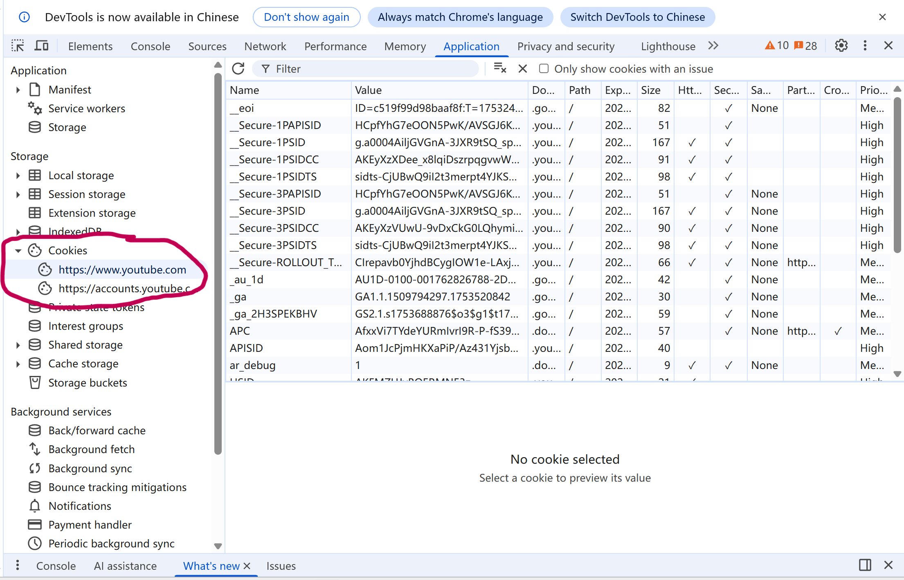
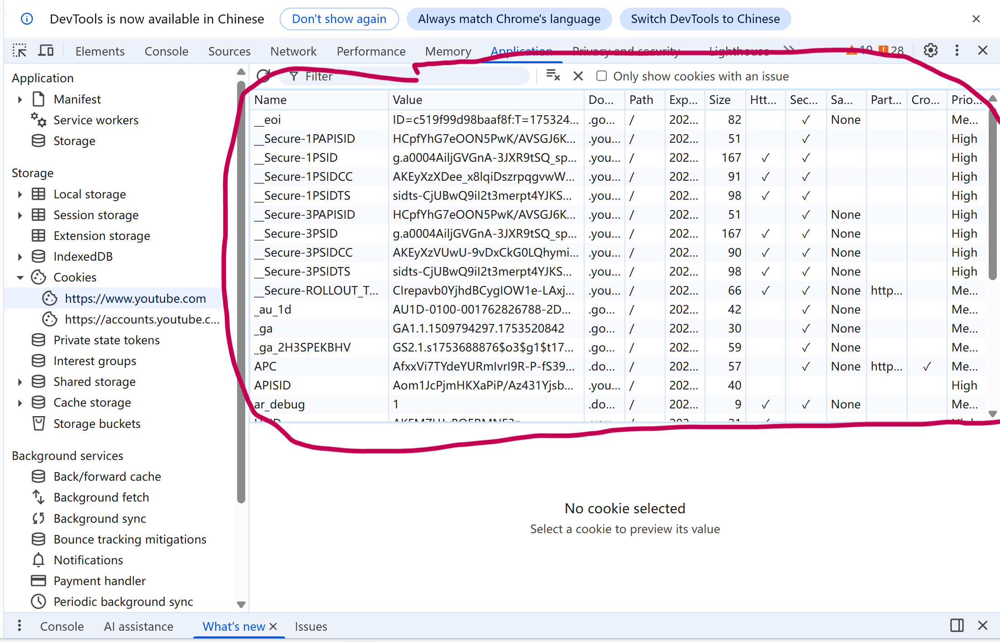
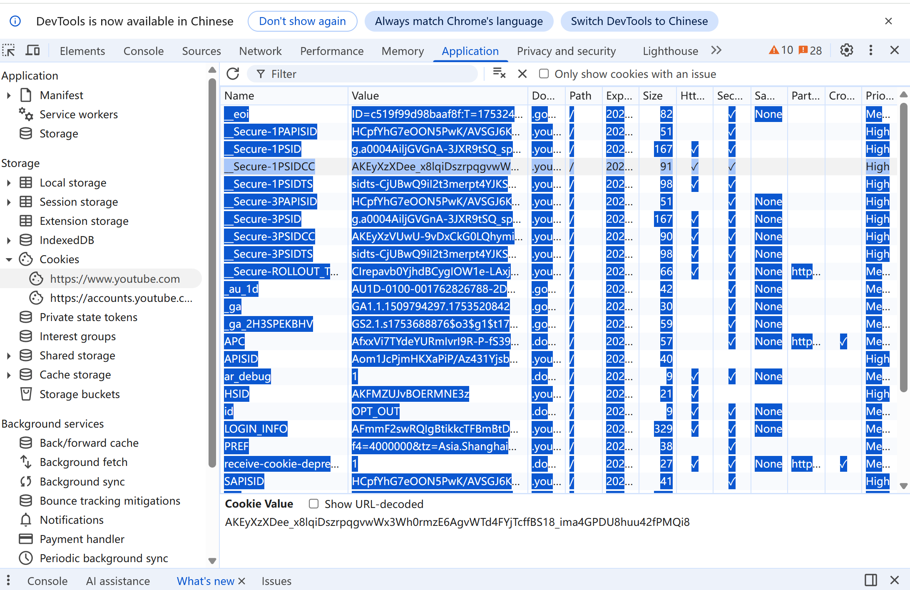
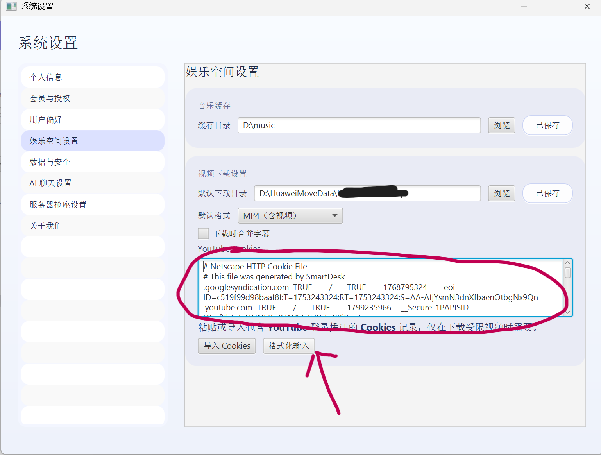

1
打开 YouTube
Open YouTube
访问 youtube.com，确认右上角出现你的头像，表示已登录。
Visit youtube.com and make sure your profile avatar appears in the top-right corner.

下载受限视频前，请按顺序完成以下步骤，将浏览器中的 YouTube Cookies 复制至 SmartDesk「娱乐空间设置」。 Follow these steps to export browser cookies from YouTube and paste them into SmartDesk > Entertainment settings before downloading restricted videos.
访问 youtube.com，确认右上角出现你的头像，表示已登录。
Visit youtube.com and make sure your profile avatar appears in the top-right corner.

按 F12（部分设备需 Fn+F12），或右键页面选择「检查」，即可弹出开发者工具窗格。
Press F12 (Fn+F12 on some laptops) or right-click and choose “Inspect” to launch DevTools.

在 DevTools 顶部找到「Application / Storage / 应用程序」标签并点击，通常会有一个小房子图标。
Locate the “Application” or “Storage” tab (house icon) and click it.

在左侧目录展开「Cookies」，然后选择 https://youtube.com。
In the left tree, expand “Cookies” and click https://youtube.com.

右侧会出现包含 name、value、domain 等字段的表格。
The right panel now lists cookie rows with name, value, domain, etc.

在表格区域按 Ctrl+A 全选，再按 Ctrl+C 复制全部行。
Press Ctrl+A then Ctrl+C inside the table to copy every row.

打开 SmartDesk → 设置 → 娱乐空间设置 → YouTube Cookies 文本框，粘贴内容并点击「格式化输入」。
Open SmartDesk → Settings → Entertainment Space → YouTube Cookies, paste the text and tap “Format input”.

复制的 Cookies 仅保存在你的设备上，用于下载地区受限或需登录的视频。如登录状态变化，请重新导出。 The copied cookies stay on your device and let SmartDesk download region-locked / login-required videos. Re-export them whenever your login changes.